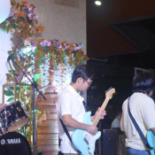

@mikepogi
Location: Angeles City, Pampanga

Mike Fernando Bunag was born in Mabalacat, Pampanga on April 9, 2003. He grew up in Santa Rosa, Nueva Ecija. He is a man with a future and has a wide dream for himself. Also, Mike is a family-oriented man who always thinks about what's best for everyone. He may not be a perfect person but he's always trying his best.
Mike's hobbies are singing, playing instruments, and reading books. His talent is to play instruments and singing at the same time. He loves to sing in public places like in some open stages. He has confidence because of his supportive parents and the people that surround him.
He is currently studying at Holy Angel University and is a 3rd year Computer Engineering student. His basic skills are HTML and CSS, Networking, Django, Javascript and, Troubleshooting. Mike is still a beginner in terms of programming but he still wants to learn more even though he is not showy about this matter.
Mike is resolutely focused on pursuing their dream as a software engineer. With an unwavering passion for problem-solving and a ceaseless curiosity about the digital realm, they are dedicated to honing their skills, pushing boundaries, and crafting innovative solutions with a profound impact. Their journey in this dynamic field is only beginning, and they are excited to embark on the path toward transforming their dreams into reality, one line of code at a time.
This is the attractions page that I have made for Santa Rita. It showcases the historical and significant places around its municipality. Rafael Roy Dizon helped me at this part because I'm still learning a lot of things but it is not possible to be finished if I don't have the passion.
I also helped troubleshooting in some parts of our webpage like small details in our landing page and also added a small detail which is the Our Team part.